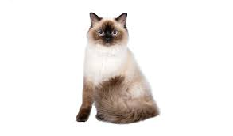

แร็กดอลเป็นแมวสายพันธุ์ใหญ่ มีพละกำลังและลวดลายที่เป็นเอกลักษณ์ แม้จะดูเป็นแมวขึงขัง จริงจัง แต่จริง ๆ แล้วเป็นแมวสบาย ๆ รักสงบสมชื่อ “แร็กดอล” ที่แปลว่า “ตุ๊กตาผ้า” ส่วนหัวของแมวพันธุ์แร็กดอลค่อนข้างกว้าง ด้านบนแบน และหูทั้งสองข้างตั้งห่างกัน ตาลึกกลมโตสีฟ้า ลำตัวของแมวพันธุ์นี้ยาว มีกล้ามอกกว้าง คอสั้นและขาตรงแข็งแรง อุ้งมือค่อนข้างกลมและใหญ่ มีขนแซมตามซอกนิ้ว ส่วนหางยาวเป็นพวง ขนของแมวพันธุ์แร็กดอลหนาละเอียดเหมือนเส้นไหม มีทั้งแบบขนยาวกลาง ๆ ไปจนถึงยาวมาก แต่สำหรับเหมียวที่โตเต็มไวแผงอกและรอบคอจะมีขนขึ้นแน่นฟู ขนแมวแร็กดอลจะมีอยู่ 3 แบบและแต่ละแบบจะมี 4 สี นอกจากนี้แร็กดอลบางตัวยังมีแต้มสีขาวบนหน้า หู หางและขาด้วย
